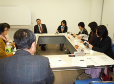

|
|
■議題
○活動報告について ・食品偽装、原発事故による食品への影響、トランス脂肪酸等について再度検討をして、加筆修正します。 ○取り組みのまとめについて ・新しくオンブズ会議のメンバーになる方等が見ても解るような内容に修正します。 ○加筆すること等意見交換し、食品安全性の確保について気になること等を具体的にあげました。 ・全6回の日程を決めました。基本的に午前中に県連の会議室で行います。 ・埼玉県食品安全局との懇談会をもう1回増やしたい(全3回)との希望。 
（1）第5回食の安全オンブズ会議（1/26） （2）第2回関東農政局との消費者懇談会（2/4） ・戸別所得補償制度 ・TPPについて （3）第31回埼玉県食の安全県民会議（2/9） ・食品添加物の安全性について ・食の安全・安心について考えた事 （4）第2回食の安全・安心消費者懇談会（2/15） ・食品安全に関する当面の課題について （5）埼玉県・さいたま市・川越市の食品衛生監視指導計画（案）に対する要望書 （6）TPP(環太平洋パートナーシップ)等問題を考える埼玉の発足式（3/25） |